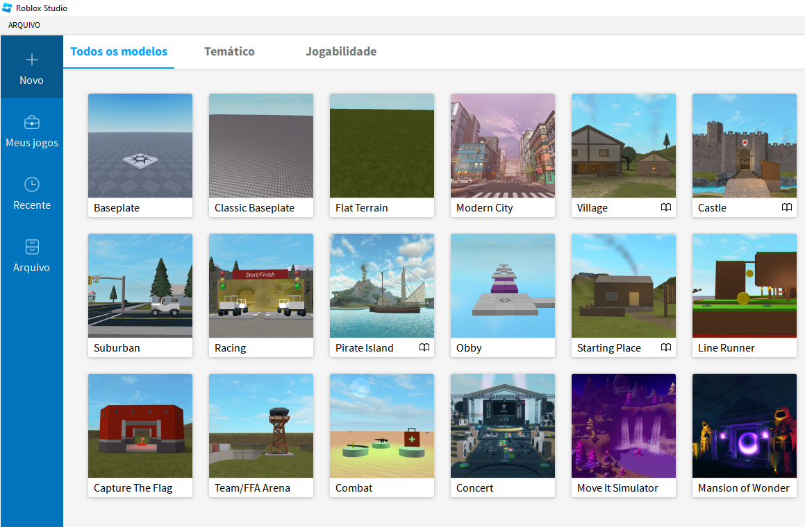

1º Passo: Instalação do Studio
Para Instalar o Roblox Studio, basta clicar em "Create" e abrirá uma tela
onde terá um botão "Começe a
criar", onde ensinará o passo a passo da instalação.
Clique em dowload quando estiver nesta tela:
Após a instalação, pesquise "Roblox Studio" na área de pesquisa do windows
e aperte ENTER
2º Passo: Interface do Studio

Após iniciar, clique em Baseplate para iniciar o seu jogo do absoluto zero.
O que é a Baseplate??
A Baseplate é um elemento fundamental que fornece uma base sólida
para a construção de jogos no Roblox. Ela ajuda os desenvolvedores a iniciar a
criação do ambiente do jogo e serve como ponto de referência para a adição de
outros objetos e elementos que compõem o mundo virtual.
Provavelmente, irá abrir uma tela parecida como está, com o explorador,
propriedades, e a toolbox, mas pra frente veremos mais um pouco deste assunto.
SÁIDA / OUTPUT
A saída é onde os erros das scripts serão exibidos, basta clicar em output,
localizado na imagem abaixo.
Após isso irá abrir esta caixa provavelmente embaixo da tela visual.
O "Explorer" (ou Explorador, em português) é uma parte importante da interface
do Roblox Studio, que é a
plataforma de desenvolvimento de jogos do Roblox.
O Explorer é uma janela que permite aos desenvolvedores de
jogos ver e
gerenciar todos os objetos e elementos que compõem o jogo, como
partes, modelos,
personagens, scripts e muito mais.